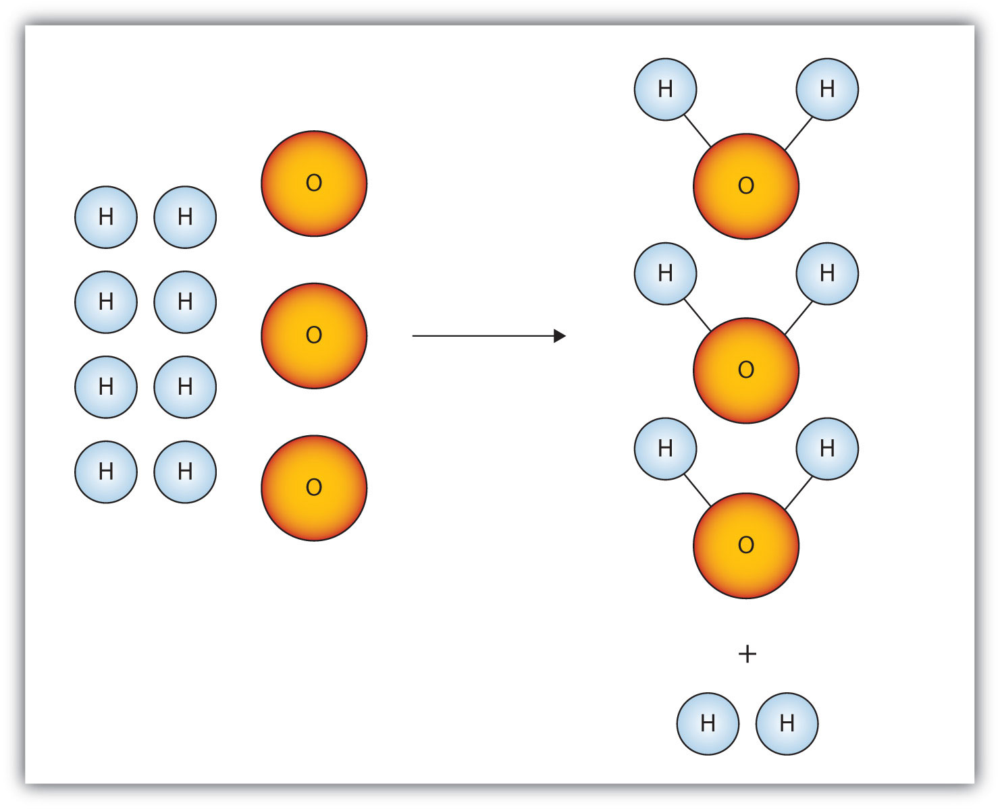

At Contrived State University in Anytown, Ohio, a new building was dedicated in March 2010 to house the College of Education. The 100,000-square-foot building has enough office space to accommodate 86 full-time faculty members and 167 full-time staff.
In a fit of monetary excess, the university administration offered to buy new furniture (desks and chairs) and computer workstations for all faculty and staff members moving into the new building. However, to save on long-term energy and materials costs, the university offered to buy only 1 laser printer per 10 employees, with the plan to network the printers together.
How many laser printers did the administration have to buy? It is rather simple to show that 26 laser printers are needed for all the employees. However, what if a chemist was calculating quantities for a chemical reaction? Interestingly enough, similar calculations can be performed for chemicals as well as laser printers.
Figure 5.1 Outfitting a New Building

In filling a new office building with furniture and equipment, managers do calculations similar to those performed by scientists doing chemical reactions.
Source: Photo courtesy of Benjamin Benschneider, Cleveland State University.
We have already established that quantities are important in science, especially in chemistry. It is important to make accurate measurements of a variety of quantities when performing experiments. However, it is also important to be able to relate one measured quantity to another, unmeasured quantity. In this chapter, we will consider how we manipulate quantities to relate them to each other.
Consider a classic recipe for pound cake: 1 pound of eggs, 1 pound of butter, 1 pound of flour, and 1 pound of sugar. (That’s why it’s called “pound cake.”) If you have 4 pounds of butter, how many pounds of sugar, flour, and eggs do you need? You would need 4 pounds each of sugar, flour, and eggs.
Now suppose you have 1.00 g H2. If the chemical reaction follows the balanced chemical equation
2H2(g) + O2(g) → 2H2O(ℓ)then what mass of oxygen do you need to make water?
Curiously, this chemical reaction question is very similar to the pound cake question. Both of them involve relating a quantity of one substance to a quantity of another substance or substances. The relating of one chemical substance to another using a balanced chemical reaction is called stoichiometryThe relating of one chemical substance to another using a balanced chemical reaction.. Using stoichiometry is a fundamental skill in chemistry; it greatly broadens your ability to predict what will occur and, more importantly, how much is produced.
Let us consider a more complicated example. A recipe for pancakes calls for 2 cups (c) of pancake mix, 1 egg, and 1/2 c of milk. We can write this in the form of a chemical equation:
2 c mix + 1 egg + 1/2 c milk → 1 batch of pancakesIf you have 9 c of pancake mix, how many eggs and how much milk do you need? It might take a little bit of work, but eventually you will find you need 4½ eggs and 2¼ c milk.
How can we formalize this? We can make a conversion factor using our original recipe and use that conversion factor to convert from a quantity of one substance to a quantity of another substance, similar to the way we constructed a conversion factor between feet and yards in Chapter 2 "Measurements". Because one recipe’s worth of pancakes requires 2 c of pancake mix, 1 egg, and 1/2 c of milk, we actually have the following mathematical relationships that relate these quantities:
2 c pancake mix ⇔ 1 egg ⇔ 1/2 c milkwhere ⇔ is the mathematical symbol for “is equivalent to.” This does not mean that 2 c of pancake mix equal 1 egg. However, as far as this recipe is concerned, these are the equivalent quantities needed for a single recipe of pancakes. So, any possible quantities of two or more ingredients must have the same numerical ratio as the ratios in the equivalence.
We can deal with these equivalences in the same way we deal with equalities in unit conversions: we can make conversion factors that essentially equal 1. For example, to determine how many eggs we need for 9 c of pancake mix, we construct the conversion factor
This conversion factor is, in a strange way, equivalent to 1 because the recipe relates the two quantities. Starting with our initial quantity and multiplying by our conversion factor,
Note how the units cups pancake mix canceled, leaving us with units of eggs. This is the formal, mathematical way of getting our amounts to mix with 9 c of pancake mix. We can use a similar conversion factor for the amount of milk:
Again, units cancel, and new units are introduced.
A balanced chemical equation is nothing more than a recipe for a chemical reaction. The difference is that a balanced chemical equation is written in terms of atoms and molecules, not cups, pounds, and eggs.
For example, consider the following chemical equation:
2H2(g) + O2(g) → 2H2O(ℓ)We can interpret this as, literally, “two hydrogen molecules react with one oxygen molecule to make two water molecules.” That interpretation leads us directly to some equivalences, just as our pancake recipe did:
2H2 molecules ⇔ 1O2 molecule ⇔ 2H2O moleculesThese equivalences allow us to construct conversion factors:
and so forth. These conversions can be used to relate quantities of one substance to quantities of another. For example, suppose we need to know how many molecules of oxygen are needed to react with 16 molecules of H2. As we did with converting units, we start with our given quantity and use the appropriate conversion factor:
Note how the unit molecules H2 cancels algebraically, just as any unit does in a conversion like this. The conversion factor came directly from the coefficients in the balanced chemical equation. This is another reason why a properly balanced chemical equation is important.
How many molecules of SO3 are needed to react with 144 molecules of Fe2O3 given this balanced chemical equation?
Fe2O3(s) + 3SO3(g) → Fe2(SO4)3Solution
We use the balanced chemical equation to construct a conversion factor between Fe2O3 and SO3. The number of molecules of Fe2O3 goes on the bottom of our conversion factor so it cancels with our given amount, and the molecules of SO3 go on the top. Thus, the appropriate conversion factor is
Starting with our given amount and applying the conversion factor, the result is
We need 432 molecules of SO3 to react with 144 molecules of Fe2O3.
Test Yourself
How many molecules of H2 are needed to react with 29 molecules of N2 to make ammonia if the balanced chemical equation is N2 + 3H2 → 2NH3?
Answer
87 molecules
Chemical equations also allow us to make conversions regarding the number of atoms in a chemical reaction because a chemical formula lists the number of atoms of each element in a compound. The formula H2O indicates that there are two hydrogen atoms and one oxygen atom in each molecule, and these relationships can be used to make conversion factors:
Conversion factors like this can also be used in stoichiometry calculations.
How many molecules of NH3 can you make if you have 228 atoms of H2?
Solution
From the formula, we know that one molecule of NH3 has three H atoms. Use that fact as a conversion factor:
Test Yourself
How many molecules of Fe2(SO4)3 can you make from 777 atoms of S?
Answer
259 molecules
Think back to the pound cake recipe. What possible conversion factors can you construct relating the components of the recipe?
Think back to the pancake recipe. What possible conversion factors can you construct relating the components of the recipe?
What are all the conversion factors that can be constructed from the balanced chemical reaction 2H2(g) + O2(g) → 2H2O(ℓ)?
What are all the conversion factors that can be constructed from the balanced chemical reaction N2(g) + 3H2(g) → 2NH3(g)?
Given the chemical equation
Na(s) + H2O(ℓ) → NaOH(aq) + H2(g)Given the chemical equation
S(s) + O2(g) → SO3(g)For the balanced chemical equation
6H+(aq) + 2MnO4−(aq) + 5H2O2(ℓ) → 2Mn2+(aq) + 5O2(g) + 8H2O(ℓ)how many molecules of H2O are produced when 75 molecules of H2O2 react?
For the balanced chemical reaction
2C6H6(ℓ) + 15O2(g) → 12CO2(g) + 6H2O(ℓ)how many molecules of CO2 are produced when 56 molecules of C6H6 react?
Given the balanced chemical equation
Fe2O3(s) + 3SO3(g) → Fe2(SO4)3how many molecules of Fe2(SO4)3 are produced if 321 atoms of S are reacted?
For the balanced chemical equation
CuO(s) + H2S(g) → CuS + H2O(ℓ)how many molecules of CuS are formed if 9,044 atoms of H react?
For the balanced chemical equation
Fe2O3(s) + 3SO3(g) → Fe2(SO4)3suppose we need to make 145,000 molecules of Fe2(SO4)3. How many molecules of SO3 do we need?
One way to make sulfur hexafluoride is to react thioformaldehyde, CH2S, with elemental fluorine:
CH2S + 6F2 → CF4 + 2HF + SF6If 45,750 molecules of SF6 are needed, how many molecules of F2 are required?
Construct the three independent conversion factors possible for these two reactions:
Why are the ratios between H2 and O2 different?
The conversion factors are different because the stoichiometries of the balanced chemical reactions are different.
Construct the three independent conversion factors possible for these two reactions:
What similarities, if any, exist in the conversion factors from these two reactions?
or are two conversion factors that can be constructed from the pound cake recipe. Other conversion factors are also possible.
, , , and their reciprocals are the conversion factors that can be constructed.
120 molecules
107 molecules
435,000 molecules
So far, we have been talking about chemical substances in terms of individual atoms and molecules. Yet we don’t typically deal with substances an atom or a molecule at a time; we work with millions, billions, and trillions of atoms and molecules at a time. What we need is a way to deal with macroscopic, rather than microscopic, amounts of matter. We need a unit of amount that relates quantities of substances on a scale that we can interact with.
Chemistry uses a unit called mole. A moleThe number of things equal to the number of atoms in exactly 12 g of carbon-12; equals things. (mol) is a number of things equal to the number of atoms in exactly 12 g of carbon-12. Experimental measurements have determined that this number is very large:
1 mol = 6.02214179 × 1023 thingsUnderstand that a mole means a number of things, just like a dozen means a certain number of things—twelve, in the case of a dozen. But a mole is a much larger number of things. These things can be atoms, or molecules, or eggs; however, in chemistry, we usually use the mole to refer to the amounts of atoms or molecules. Although the number of things in a mole is known to eight decimal places, it is usually fine to use only two or three decimal places in calculations. The numerical value of things in a mole is often called Avogadro’s number (NA), which is also known as the Avogadro constant, after Amadeo Avogadro, an Italian chemist who first proposed its importance.
How many molecules are present in 2.76 mol of H2O? How many atoms is this?
Solution
The definition of a mole is an equality that can be used to construct a conversion factor. Also, because we know that there are three atoms in each molecule of H2O, we can also determine the number of atoms in the sample.
To determine the total number of atoms, we have
Test Yourself
How many molecules are present in 4.61 × 10−2 mol of O2?
Answer
2.78 × 1022 molecules
How big is a mole? It is very large. Suppose you had a mole of dollar bills that need to be counted. If everyone on earth (about 6 billion people) counted one bill per second, it would take about 3.2 million years to count all the bills. A mole of sand would fill a cube about 32 km on a side. A mole of pennies stacked on top of each other would have about the same diameter as our galaxy, the Milky Way. A mole is a lot of things—but atoms and molecules are very tiny. One mole of carbon atoms would make a cube that is 1.74 cm on a side, small enough to carry in your pocket.
Why is the mole unit so important? It represents the link between the microscopic and the macroscopic, especially in terms of mass. A mole of a substance has the same mass in grams as one unit (atom or molecules) has in atomic mass units. The mole unit allows us to express amounts of atoms and molecules in visible amounts that we can understand.
For example, we already know that, by definition, a mole of carbon has a mass of exactly 12 g. This means that exactly 12 g of C has 6.022 × 1023 atoms:
12 g C = 6.022 × 1023 atoms CWe can use this equality as a conversion factor between the number of atoms of carbon and the number of grams of carbon. How many grams are there, say, in 1.50 × 1025 atoms of carbon? This is a one-step conversion:
But it also goes beyond carbon. Previously we defined atomic and molecular masses as the number of atomic mass units per atom or molecule. Now we can do so in terms of grams. The atomic mass of an element is the number of grams in 1 mol of atoms of that element, while the molecular mass of a compound is the number of grams in 1 mol of molecules of that compound. Sometimes these masses are called molar massesThe mass of 1 mol of a substance in grams. to emphasize the fact that they are the mass for 1 mol of things. (The term molar is the adjective form of mole and has nothing to do with teeth.)
Here are some examples. The mass of a hydrogen atom is 1.0079 u; the mass of 1 mol of hydrogen atoms is 1.0079 g. Elemental hydrogen exists as a diatomic molecule, H2. One molecule has a mass of 1.0079 + 1.0079 = 2.0158 u, while 1 mol H2 has a mass of 2.0158 g. A molecule of H2O has a mass of about 18.01 u; 1 mol H2O has a mass of 18.01 g. A single unit of NaCl has a mass of 58.45 u; NaCl has a molar mass of 58.45 g. In each of these moles of substances, there are 6.022 × 1023 units: 6.022 × 1023 atoms of H, 6.022 × 1023 molecules of H2 and H2O, 6.022 × 1023 units of NaCl ions. These relationships give us plenty of opportunities to construct conversion factors for simple calculations.
What is the molar mass of C6H12O6?
Solution
To determine the molar mass, we simply add the atomic masses of the atoms in the molecular formula but express the total in grams per mole, not atomic mass units. The masses of the atoms can be taken from the periodic table or the list of elements in Chapter 17 "Appendix: Periodic Table of the Elements":
| 6 C = 6 × 12.011 | = 72.066 |
| 12 H = 12 × 1.0079 | = 12.0948 |
| 6 O = 6 × 15.999 | = 95.994 |
| TOTAL | = 180.155 g/mol |
Per convention, the unit grams per mole is written as a fraction.
Test Yourself
What is the molar mass of AgNO3?
Answer
169.87 g/mol
Knowing the molar mass of a substance, we can calculate the number of moles in a certain mass of a substance and vice versa, as these examples illustrate. The molar mass is used as the conversion factor.
What is the mass of 3.56 mol of HgCl2? The molar mass of HgCl2 is 271.49 g/mol.
Solution
Use the molar mass as a conversion factor between moles and grams. Because we want to cancel the mole unit and introduce the gram unit, we can use the molar mass as given:
Test Yourself
What is the mass of 33.7 mol of H2O?
Answer
607 g
How many moles of H2O are present in 240.0 g of water (about the mass of a cup of water)?
Solution
Use the molar mass of H2O as a conversion factor from mass to moles. The molar mass of water is (1.0079 + 1.0079 + 15.999) = 18.015 g/mol. However, because we want to cancel the gram unit and introduce moles, we need to take the reciprocal of this quantity, or 1 mol/18.015 g:
Test Yourself
How many moles are present in 35.6 g of H2SO4 (molar mass = 98.08 g/mol)?
Answer
0.363 mol
Other conversion factors can be combined with the definition of mole—density, for example.
The density of ethanol is 0.789 g/mL. How many moles are in 100.0 mL of ethanol? The molar mass of ethanol is 46.08 g/mol.
Solution
Here, we use density to convert from volume to mass and then use the molar mass to determine the number of moles.
Test Yourself
If the density of benzene, C6H6, is 0.879 g/mL, how many moles are present in 17.9 mL of benzene?
Answer
0.201 mol
How many atoms are present in 4.55 mol of Fe?
How many atoms are present in 0.0665 mol of K?
How many molecules are present in 2.509 mol of H2S?
How many molecules are present in 0.336 mol of acetylene (C2H2)?
How many moles are present in 3.55 × 1024 Pb atoms?
How many moles are present in 2.09 × 1022 Ti atoms?
How many moles are present in 1.00 × 1023 PF3 molecules?
How many moles are present in 5.52 × 1025 penicillin molecules?
Determine the molar mass of each substance.
Determine the molar mass of each substance.
Determine the molar mass of each substance.
Determine the molar mass of each substance.
What is the mass of 4.44 mol of Rb?
What is the mass of 0.311 mol of Xe?
What is the mass of 12.34 mol of Al2(SO4)3?
What is the mass of 0.0656 mol of PbCl2?
How many moles are present in 45.6 g of CO?
How many moles are present in 0.00339 g of LiF?
How many moles are present in 1.223 g of SF6?
How many moles are present in 48.8 g of BaCO3?
How many moles are present in 54.8 mL of mercury if the density of mercury is 13.6 g/mL?
How many moles are present in 56.83 mL of O2 if the density of O2 is 0.00133 g/mL?
2.74 × 1024 atoms
1.511 × 1024 molecules
5.90 mol
0.166 mol
379 g
4,222 g
1.63 mol
0.008374 mol
3.72 mol
Consider this balanced chemical equation:
2H2 + O2 → 2H2OWe interpret this as “two molecules of hydrogen react with one molecule of oxygen to make two molecules of water.” The chemical equation is balanced as long as the coefficients are in the ratio 2:1:2. For instance, this chemical equation is also balanced:
100H2 + 50O2 → 100H2OThis equation is not conventional—because convention says that we use the lowest ratio of coefficients—but it is balanced. So is this chemical equation:
5,000H2 + 2,500O2 → 5,000H2OAgain, this is not conventional, but it is still balanced. Suppose we use a much larger number:
12.044 × 1023 H2 + 6.022 × 1023 O2 → 12.044 × 1023 H2OThese coefficients are also in the ratio of 2:1:2. But these numbers are related to the number of things in a mole: the first and last numbers are two times Avogadro’s number, while the second number is Avogadro’s number. That means that the first and last numbers represent 2 mol, while the middle number is just 1 mol. Well, why not just use the number of moles in balancing the chemical equation?
2H2 + O2 → 2H2Ois the same balanced chemical equation we started with! What this means is that chemical equations are not just balanced in terms of molecules; they are also balanced in terms of moles. We can just as easily read this chemical equation as “two moles of hydrogen react with one mole of oxygen to make two moles of water.” All balanced chemical reactions are balanced in terms of moles.
Interpret this balanced chemical equation in terms of moles.
P4 + 5O2 → P4O10Solution
The coefficients represent the number of moles that react, not just molecules. We would speak of this equation as “one mole of molecular phosphorus reacts with five moles of elemental oxygen to make one mole of tetraphosphorus decoxide.”
Test Yourself
Interpret this balanced chemical equation in terms of moles.
N2 + 3H2 → 2NH3Answer
One mole of elemental nitrogen reacts with three moles of elemental hydrogen to produce two moles of ammonia.
In Chapter 4 "Chemical Reactions and Equations", Section 4.1 "The Chemical Equation", we stated that a chemical equation is simply a recipe for a chemical reaction. As such, chemical equations also give us equivalences—equivalences between the reactants and the products. However, now we understand that these equivalences are expressed in terms of moles. Consider the chemical equation
2H2 + O2 → 2H2OThis chemical reaction gives us the following equivalences:
2 mol H2 ⇔ 1 mol O2 ⇔ 2 mol H2OAny two of these quantities can be used to construct a conversion factor that lets us relate the number of moles of one substance to an equivalent number of moles of another substance. If, for example, we want to know how many moles of oxygen will react with 17.6 mol of hydrogen, we construct a conversion factor between 2 mol of H2 and 1 mol of O2 and use it to convert from moles of one substance to moles of another:
Note how the mol H2 unit cancels, and mol O2 is the new unit introduced. This is an example of a mole-mole calculationA stoichiometry calculation when one starts with moles of one substance and convert to moles of another substance using the balanced chemical equation., when you start with moles of one substance and convert to moles of another substance by using the balanced chemical equation. The example may seem simple because the numbers are small, but numbers won’t always be so simple!
For the balanced chemical equation
2C4H10(g) + 13O2 → 8CO2(g) + 10H2O(ℓ)if 154 mol of O2 are reacted, how many moles of CO2 are produced?
Solution
We are relating an amount of oxygen to an amount of carbon dioxide, so we need the equivalence between these two substances. According to the balanced chemical equation, the equivalence is
13 mol O2 ⇔ 8 mol CO2We can use this equivalence to construct the proper conversion factor. We start with what we are given and apply the conversion factor:
The mol O2 unit is in the denominator of the conversion factor so it cancels. Both the 8 and the 13 are exact numbers, so they don’t contribute to the number of significant figures in the final answer.
Test Yourself
Using the above equation, how many moles of H2O are produced when 154 mol of O2 react?
Answer
118 mol
It is important to reiterate that balanced chemical equations are balanced in terms of moles. Not grams, kilograms, or liters—but moles. Any stoichiometry problem will likely need to work through the mole unit at some point, especially if you are working with a balanced chemical reaction.
Express in mole terms what this chemical equation means.
CH4 + 2O2 → CO2 + 2H2OExpress in mole terms what this chemical equation means.
Na2CO3 + 2HCl → 2NaCl + H2O + CO2How many molecules of each substance are involved in the equation in Exercise 1 if it is interpreted in terms of moles?
How many molecules of each substance are involved in the equation in Exercise 2 if it is interpreted in terms of moles?
For the chemical equation
2C2H6 + 7O2 → 4CO2 + 6H2Owhat equivalences can you write in terms of moles? Use the ⇔ sign.
For the chemical equation
2Al + 3Cl2 → 2AlCl3what equivalences can you write in terms of moles? Use the ⇔ sign.
Write the balanced chemical reaction for the combustion of C5H12 (the products are CO2 and H2O) and determine how many moles of H2O are formed when 5.8 mol of O2 are reacted.
Write the balanced chemical reaction for the formation of Fe2(SO4)3 from Fe2O3 and SO3 and determine how many moles of Fe2(SO4)3 are formed when 12.7 mol of SO3 are reacted.
For the balanced chemical equation
3Cu(s) + 2NO3−(aq) + 8H+(aq) → 3Cu2+(aq) + 4H2O(ℓ) + 2NO(g)how many moles of Cu2+ are formed when 55.7 mol of H+ are reacted?
For the balanced chemical equation
Al(s) + 3Ag+(aq) → Al3+(aq) + 3Ag(s)how many moles of Ag are produced when 0.661 mol of Al are reacted?
For the balanced chemical reaction
4NH3(g) + 5O2(g) → 4NO(g) + 6H2O(ℓ)how many moles of H2O are produced when 0.669 mol of NH3 react?
For the balanced chemical reaction
4NaOH(aq) + 2S(s) + 3O2(g) → 2Na2SO4(aq) + 2H2O(ℓ)how many moles of Na2SO4 are formed when 1.22 mol of O2 react?
For the balanced chemical reaction
4KO2(s) + 2CO2(g) → 2K2CO3(s) + 3O2(g)determine the number of moles of both products formed when 6.88 mol of KO2 react.
For the balanced chemical reaction
2AlCl3 + 3H2O(ℓ) → Al2O3 + 6HCl(g)determine the number of moles of both products formed when 0.0552 mol of AlCl3 react.
One mole of CH4 reacts with 2 mol of O2 to make 1 mol of CO2 and 2 mol of H2O.
6.022 × 1023 molecules of CH4, 1.2044 × 1024 molecules of O2, 6.022 × 1023 molecules of CO2, and 1.2044 × 1024 molecules of H2O
2 mol of C2H6 ⇔ 7 mol of O2 ⇔ 4 mol of CO2 ⇔ 6 mol of H2O
C5H12 + 8O2 → 5CO2 + 6H2O; 4.4 mol
20.9 mol
1.00 mol
3.44 mol of K2CO3; 5.16 mol of O2
Mole-mole calculations are not the only type of calculations that can be performed using balanced chemical equations. Recall that the molar mass can be determined from a chemical formula and used as a conversion factor. We can add that conversion factor as another step in a calculation to make a mole-mass calculationA calculation in which you start with a given number of moles of a substance and calculate the mass of another substance involved in the chemical equation, or vice versa., where we start with a given number of moles of a substance and calculate the mass of another substance involved in the chemical equation, or vice versa.
For example, suppose we have the balanced chemical equation
2Al + 3Cl2 → 2AlCl3Suppose we know we have 123.2 g of Cl2. How can we determine how many moles of AlCl3 we will get when the reaction is complete? First and foremost, chemical equations are not balanced in terms of grams; they are balanced in terms of moles. So to use the balanced chemical equation to relate an amount of Cl2 to an amount of AlCl3, we need to convert the given amount of Cl2 into moles. We know how to do this by simply using the molar mass of Cl2 as a conversion factor. The molar mass of Cl2 (which we get from the atomic mass of Cl from the periodic table) is 70.90 g/mol. We must invert this fraction so that the units cancel properly:
Now that we have the quantity in moles, we can use the balanced chemical equation to construct a conversion factor that relates the number of moles of Cl2 to the number of moles of AlCl3. The numbers in the conversion factor come from the coefficients in the balanced chemical equation:
Using this conversion factor with the molar quantity we calculated above, we get
So, we will get 1.159 mol of AlCl3 if we react 123.2 g of Cl2.
In this last example, we did the calculation in two steps. However, it is mathematically equivalent to perform the two calculations sequentially on one line:
The units still cancel appropriately, and we get the same numerical answer in the end. Sometimes the answer may be slightly different from doing it one step at a time because of rounding of the intermediate answers, but the final answers should be effectively the same.
How many moles of HCl will be produced when 249 g of AlCl3 are reacted according to this chemical equation?
2AlCl3 + 3H2O(ℓ) → Al2O3 + 6HCl(g)Solution
We will do this in two steps: convert the mass of AlCl3 to moles and then use the balanced chemical equation to find the number of moles of HCl formed. The molar mass of AlCl3 is 133.33 g/mol, which we have to invert to get the appropriate conversion factor:
Now we can use this quantity to determine the number of moles of HCl that will form. From the balanced chemical equation, we construct a conversion factor between the number of moles of AlCl3 and the number of moles of HCl:
Applying this conversion factor to the quantity of AlCl3, we get
Alternatively, we could have done this in one line:
The last digit in our final answer is slightly different because of rounding differences, but the answer is essentially the same.
Test Yourself
How many moles of Al2O3 will be produced when 23.9 g of H2O are reacted according to this chemical equation?
2AlCl3 + 3H2O(ℓ) → Al2O3 + 6HCl(g)Answer
0.442 mol
A variation of the mole-mass calculation is to start with an amount in moles and then determine an amount of another substance in grams. The steps are the same but are performed in reverse order.
How many grams of NH3 will be produced when 33.9 mol of H2 are reacted according to this chemical equation?
N2(g) + 3H2(g) → 2NH3(g)Solution
The conversions are the same, but they are applied in a different order. Start by using the balanced chemical equation to convert to moles of another substance and then use its molar mass to determine the mass of the final substance. In two steps, we have
Now, using the molar mass of NH3, which is 17.03 g/mol, we get
Test Yourself
How many grams of N2 are needed to produce 2.17 mol of NH3 when reacted according to this chemical equation?
N2(g) + 3H2(g) → 2NH3(g)Answer
30.4 g (Note: here we go from a product to a reactant, showing that mole-mass problems can begin and end with any substance in the chemical equation.)
It should be a trivial task now to extend the calculations to mass-mass calculationsA calculation in which you start with a given mass of a substance and calculate the mass of another substance involved in the chemical equation., in which we start with a mass of some substance and end with the mass of another substance in the chemical reaction. For this type of calculation, the molar masses of two different substances must be used—be sure to keep track of which is which. Again, however, it is important to emphasize that before the balanced chemical reaction is used, the mass quantity must first be converted to moles. Then the coefficients of the balanced chemical reaction can be used to convert to moles of another substance, which can then be converted to a mass.
For example, let us determine the number of grams of SO3 that can be produced by the reaction of 45.3 g of SO2 and O2:
2SO2(g) + O2(g) → 2SO3(g)First, we convert the given amount, 45.3 g of SO2, to moles of SO2 using its molar mass (64.06 g/mol):
Second, we use the balanced chemical reaction to convert from moles of SO2 to moles of SO3:
Finally, we use the molar mass of SO3 (80.06 g/mol) to convert to the mass of SO3:
We can also perform all three steps sequentially, writing them on one line as
We get the same answer. Note how the initial and all the intermediate units cancel, leaving grams of SO3, which is what we are looking for, as our final answer.
What mass of Mg will be produced when 86.4 g of K are reacted?
MgCl2(s) + 2K(s) → Mg(s) + 2KCl(s)Solution
We will simply follow the steps
mass K → mol K → mol Mg → mass MgIn addition to the balanced chemical equation, we need the molar masses of K (39.09 g/mol) and Mg (24.31 g/mol). In one line,
Test Yourself
What mass of H2 will be produced when 122 g of Zn are reacted?
Zn(s) + 2HCl(aq) → ZnCl2(aq) + H2(g)Answer
3.77 g
What mass of CO2 is produced by the combustion of 1.00 mol of CH4?
CH4(g) + 2O2(g) → CO2(g) + 2H2O(ℓ)What mass of H2O is produced by the combustion of 1.00 mol of CH4?
CH4(g) + 2O2(g) → CO2(g) + 2H2O(ℓ)What mass of HgO is required to produce 0.692 mol of O2?
2HgO(s) → 2Hg(ℓ) + O2(g)What mass of NaHCO3 is needed to produce 2.659 mol of CO2?
2NaHCO3(s) → Na2CO3(s) + H2O(ℓ) + CO2(g)How many moles of Al can be produced from 10.87 g of Ag?
Al(NO3) 3(s) + 3Ag → Al + 3AgNO3How many moles of HCl can be produced from 0.226 g of SOCl2?
SOCl2(ℓ) + H2O(ℓ) → SO2(g) + 2HCl(g)How many moles of O2 are needed to prepare 1.00 g of Ca(NO3)2?
Ca(s) + N2(g) + 3O2(g) → Ca(NO3) 2(s)How many moles of C2H5OH are needed to generate 106.7 g of H2O?
C2H5OH(ℓ) + 3O2(g) → 2CO2(g) + 3H2O(ℓ)What mass of O2 can be generated by the decomposition of 100.0 g of NaClO3?
2NaClO3 → 2NaCl(s) + 3O2(g)What mass of Li2O is needed to react with 1,060 g of CO2?
Li2O(aq) + CO2(g) → Li2CO3(aq)What mass of Fe2O3 must be reacted to generate 324 g of Al2O3?
Fe2O3(s) + 2Al(s) → 2Fe(s) + Al2O3(s)What mass of Fe is generated when 100.0 g of Al are reacted?
Fe2O3(s) + 2Al(s) → 2Fe(s) + Al2O3(s)What mass of MnO2 is produced when 445 g of H2O are reacted?
H2O(ℓ) + 2MnO4−(aq) + Br−(aq) → BrO3−(aq) + 2MnO2(s) + 2OH−(aq)What mass of PbSO4 is produced when 29.6 g of H2SO4 are reacted?
Pb(s) + PbO2(s) + 2H2SO4(aq) → 2PbSO4(s) + 2H2O(ℓ)If 83.9 g of ZnO are formed, what mass of Mn2O3 is formed with it?
Zn(s) + 2MnO2(s) → ZnO(s) + Mn2O3(s)If 14.7 g of NO2 are reacted, what mass of H2O is reacted with it?
3NO2(g) + H2O(ℓ) → 2HNO3(aq) + NO(g)If 88.4 g of CH2S are reacted, what mass of HF is produced?
CH2S + 6F2 → CF4 + 2HF + SF6If 100.0 g of Cl2 are needed, what mass of NaOCl must be reacted?
NaOCl + HCl → NaOH + Cl244.0 g
3.00 × 102 g
0.0336 mol
0.0183 mol
45.1 g
507 g
4.30 × 103 g
163 g
76.7 g
In all the previous calculations we have performed involving balanced chemical equations, we made two assumptions: (1) the reaction goes exactly as written, and (2) the reaction proceeds completely. In reality, such things as side reactions occur that make some chemical reactions rather messy. For example, in the actual combustion of some carbon-containing compounds, such as methane, some CO is produced as well as CO2. However, we will continue to ignore side reactions, unless otherwise noted.
The second assumption, that the reaction proceeds completely, is more troublesome. Many chemical reactions do not proceed to completion as written, for a variety of reasons (some of which we will consider in Chapter 13 "Chemical Equilibrium"). When we calculate an amount of product assuming that all the reactant reacts, we calculate the theoretical yieldAn amount that is theoretically produced as calculated using the balanced chemical reaction., an amount that is theoretically produced as calculated using the balanced chemical reaction.
In many cases, however, this is not what really happens. In many cases, less—sometimes much less—of a product is made during the course of a chemical reaction. The amount that is actually produced in a reaction is called the actual yieldThe amount that is actually produced in a chemical reaction.. By definition, the actual yield is less than or equal to the theoretical yield. If it is not, then an error has been made.
Both theoretical yields and actual yields are expressed in units of moles or grams. It is also common to see something called a percent yield. The percent yieldActual yield divided by theoretical yield times 100% to give a percentage between 0% and 100%. is a comparison between the actual yield and the theoretical yield and is defined as
It does not matter whether the actual and theoretical yields are expressed in moles or grams, as long as they are expressed in the same units. However, the percent yield always has units of percent. Proper percent yields are between 0% and 100%—again, if percent yield is greater than 100%, an error has been made.
A worker reacts 30.5 g of Zn with nitric acid and evaporates the remaining water to obtain 65.2 g of Zn(NO3)2. What are the theoretical yield, the actual yield, and the percent yield?
Zn(s) + 2HNO3(aq) → Zn(NO3)2(aq) + H2(g)Solution
A mass-mass calculation can be performed to determine the theoretical yield. We need the molar masses of Zn (65.39 g/mol) and Zn(NO3)2 (189.41 g/mol). In three steps, the mass-mass calculation is
Thus, the theoretical yield is 88.3 g of Zn(NO3)2. The actual yield is the amount that was actually made, which was 65.2 g of Zn(NO3)2. To calculate the percent yield, we take the actual yield and divide it by the theoretical yield and multiply by 100:
The worker achieved almost three-fourths of the possible yield.
Test Yourself
A synthesis produced 2.05 g of NH3 from 16.5 g of N2. What is the theoretical yield and the percent yield?
N2(g) + 3H2(g) → 2NH3(g)Answer
theoretical yield = 20.1 g; percent yield = 10.2%
Many drugs are the product of several steps of chemical synthesis. Each step typically occurs with less than 100% yield, so the overall percent yield might be very small. The general rule is that the overall percent yield is the product of the percent yields of the individual synthesis steps. For a drug synthesis that has many steps, the overall percent yield can be very tiny, which is one factor in the huge cost of some drugs. For example, if a 10-step synthesis has a percent yield of 90% for each step, the overall yield for the entire synthesis is only 35%. Many scientists work every day trying to improve percent yields of the steps in the synthesis to decrease costs, improve profits, and minimize waste.
Even purifications of complex molecules into drug-quality purity are subject to percent yields. Consider the purification of impure albuterol. Albuterol (C13H21NO2; accompanying figure) is an inhaled drug used to treat asthma, bronchitis, and other obstructive pulmonary diseases. It is synthesized from norepinephrine, a naturally occurring hormone and neurotransmitter. Its initial synthesis makes very impure albuterol that is purified in five chemical steps. The details of the steps do not concern us; only the percent yields do:
| impure albuterol → intermediate A | percent yield = 70% |
| intermediate A → intermediate B | percent yield = 100% |
| intermediate B → intermediate C | percent yield = 40% |
| intermediate C → intermediate D | percent yield = 72% |
| intermediate D → purified albuterol | percent yield = 35% |
| overall percent yield = 70% × 100% × 40% × 72% × 35% = 7.5% | |
That is, only about one-fourteenth of the original material was turned into the purified drug. This gives you one reason why some drugs are so expensive; a lot of material is lost in making a high-purity pharmaceutical.
What is the difference between the theoretical yield and the actual yield?
What is the difference between the actual yield and the percent yield?
A worker isolates 2.675 g of SiF4 after reacting 2.339 g of SiO2 with HF. What are the theoretical yield and the actual yield?
SiO2(s) + 4HF(g) → SiF4(g) + 2H2O(ℓ)A worker synthesizes aspirin, C9H8O4, according to this chemical equation. If 12.66 g of C7H6O3 are reacted and 12.03 g of aspirin are isolated, what are the theoretical yield and the actual yield?
C7H6O3 + C4H6O3 → C9H8O4 + HC2H3O2A chemist decomposes 1.006 g of NaHCO3 and obtains 0.0334 g of Na2CO3. What are the theoretical yield and the actual yield?
2NaHCO3(s) → Na2CO3(s) + H2O(ℓ) + CO2(g)A chemist combusts a 3.009 g sample of C5H12 and obtains 3.774 g of H2O. What are the theoretical yield and the actual yield?
C5H12(ℓ) + 8O2(g) → 5CO2 + 6H2O(ℓ)What is the percent yield in Exercise 3?
What is the percent yield in Exercise 4?
What is the percent yield in Exercise 5?
What is the percent yield in Exercise 6?
Theoretical yield is what you expect stoichiometrically from a chemical reaction; actual yield is what you actually get from a chemical reaction.
theoretical yield = 4.052 g; actual yield = 2.675 g
theoretical yield = 0.635 g; actual yield = 0.0334 g
66.02%
5.26%
One additional assumption we have made about chemical reactions—in addition to the assumption that reactions proceed all the way to completion—is that all the reactants are present in the proper quantities to react to products. This is not always the case.
Consider Figure 5.2 "Making Water". Here we are taking hydrogen atoms and oxygen atoms (left) to make water molecules (right). However, there are not enough oxygen atoms to use up all the hydrogen atoms. We run out of oxygen atoms and cannot make any more water molecules, so the process stops when we run out of oxygen atoms.
Figure 5.2 Making Water
In this scenario for making water molecules, we run out of O atoms before we use up all the H atoms. Similar situations exist for many chemical reactions when one reactant runs out before the other.
A similar situation exists for many chemical reactions: you usually run out of one reactant before all of the other reactant has reacted. The reactant you run out of is called the limiting reagentThe reactant that runs out first.; the other reactant or reactants are considered to be in excess. A crucial skill in evaluating the conditions of a chemical process is to determine which reactant is the limiting reagent and which is in excess.
The key to recognizing which reactant is the limiting reagent is based on a mole-mass or mass-mass calculation: whichever reactant gives the lesser amount of product is the limiting reagent. What we need to do is determine an amount of one product (either moles or mass) assuming all of each reactant reacts. Whichever reactant gives the least amount of that particular product is the limiting reagent. It does not matter which product we use, as long as we use the same one each time. It does not matter whether we determine the number of moles or grams of that product; however, we will see shortly that knowing the final mass of product can be useful.
For example, consider this reaction:
4As(s) + 3O2(g) → 2As2O3(s)Suppose we start a reaction with 50.0 g of As and 50.0 g of O2. Which one is the limiting reagent? We need to perform two mole-mass calculations, each assuming that each reactant reacts completely. Then we compare the amount of the product produced by each and determine which is less.
The calculations are as follows:
Comparing these two answers, it is clear that 0.334 mol of As2O3 is less than 1.04 mol of As2O3, so arsenic is the limiting reagent. If this reaction is performed under these initial conditions, the arsenic will run out before the oxygen runs out. We say that the oxygen is “in excess.”
Identifying the limiting reagent, then, is straightforward. However, there are usually two associated questions: (1) what mass of product (or products) is then actually formed? and (2) what mass of what reactant is left over? The first question is straightforward to answer: simply perform a conversion from the number of moles of product formed to its mass, using its molar mass. For As2O3, the molar mass is 197.84 g/mol; knowing that we will form 0.334 mol of As2O3 under the given conditions, we will get
The second question is somewhat more convoluted to answer. First, we must do a mass-mass calculation relating the limiting reagent (here, As) to the other reagent (O2). Once we determine the mass of O2 that reacted, we subtract that from the original amount to determine the amount left over. According to the mass-mass calculation,
Because we reacted 16.0 g of our original O2, we subtract that from the original amount, 50.0 g, to get the mass of O2 remaining:
50.0 g O2 − 16.0 g O2 reacted = 34.0 g O2 left overYou must remember to perform this final subtraction to determine the amount remaining; a common error is to report the 16.0 g as the amount remaining.
A 5.00 g quantity of Rb are combined with 3.44 g of MgCl2 according to this chemical reaction:
2Rb(s) + MgCl2(s) → Mg(s) + 2RbCl(s)What mass of Mg is formed, and what mass of what reactant is left over?
Solution
Because the question asks what mass of magnesium is formed, we can perform two mass-mass calculations and determine which amount is less.
The 0.711 g of Mg is the lesser quantity, so the associated reactant—5.00 g of Rb—is the limiting reagent. To determine how much of the other reactant is left, we have to do one more mass-mass calculation to determine what mass of MgCl2 reacted with the 5.00 g of Rb and then subtract the amount reacted from the original amount.
Because we started with 3.44 g of MgCl2, we have
3.44 g MgCl2 − 2.78 g MgCl2 reacted = 0.66 g MgCl2 leftTest Yourself
Given the initial amounts listed, what is the limiting reagent, and what is the mass of the leftover reagent?
Answer
H2S is the limiting reagent; 1.5 g of MgO are left over.
The box below shows a group of nitrogen and hydrogen molecules that will react to produce ammonia, NH3. What is the limiting reagent?

The box below shows a group of hydrogen and oxygen molecules that will react to produce water, H2O. What is the limiting reagent?
Given the statement “20.0 g of methane is burned in excess oxygen,” is it obvious which reactant is the limiting reagent?
Given the statement “the metal is heated in the presence of excess hydrogen,” is it obvious which substance is the limiting reagent despite not specifying any quantity of reactant?
Acetylene (C2H2) is formed by reacting 7.08 g of C and 4.92 g of H2.
2C(s) + H2(g) → C2H2(g)What is the limiting reagent? How much of the other reactant is in excess?
Ethane (C2H6) is formed by reacting 7.08 g of C and 4.92 g of H2.
2C(s) + 3H2(g) → C2H6(g)What is the limiting reagent? How much of the other reactant is in excess?
Given the initial amounts listed, what is the limiting reagent, and how much of the other reactant is in excess?
Given the initial amounts listed, what is the limiting reagent, and how much of the other reactant is in excess?
To form the precipitate PbCl2, 2.88 g of NaCl and 7.21 g of Pb(NO3)2 are mixed in solution. How much precipitate is formed? How much of which reactant is in excess?
In a neutralization reaction, 18.06 g of KOH are reacted with 13.43 g of HNO3. What mass of H2O is produced, and what mass of which reactant is in excess?
Nitrogen is the limiting reagent.
Yes; methane is the limiting reagent.
C is the limiting reagent; 4.33 g of H2 are left over.
H2O is the limiting reagent; 25.9 g of P4O6 are left over.
6.06 g of PbCl2 are formed; 0.33 g of NaCl is left over.
How many molecules of O2 will react with 6.022 × 1023 molecules of H2 to make water? The reaction is 2H2(g) + O2(g) → 2H2O(ℓ).
How many molecules of H2 will react with 6.022 × 1023 molecules of N2 to make ammonia? The reaction is N2(g) + 3H2(g) → 2NH3(g).
How many moles are present in 6.411 kg of CO2? How many molecules is this?
How many moles are present in 2.998 mg of SCl4? How many molecules is this?
What is the mass in milligrams of 7.22 × 1020 molecules of CO2?
What is the mass in kilograms of 3.408 × 1025 molecules of SiS2?
What is the mass in grams of 1 molecule of H2O?
What is the mass in grams of 1 atom of Al?
What is the volume of 3.44 mol of Ga if the density of Ga is 6.08 g/mL?
What is the volume of 0.662 mol of He if the density of He is 0.1785 g/L?
For the chemical reaction
2C4H10(g) + 13O2(g) → 8CO2(g) + 10H2O(ℓ)assume that 13.4 g of C4H10 reacts completely to products. The density of CO2 is 1.96 g/L. What volume in liters of CO2 is produced?
For the chemical reaction
2GaCl3(s) + 3H2(g) → 2Ga(ℓ) + 6HCl(g)if 223 g of GaCl3 reacts completely to products and the density of Ga is 6.08 g/mL, what volume in milliliters of Ga is produced?
Calculate the mass of each product when 100.0 g of CuCl react according to the reaction
2CuCl(aq) → CuCl2(aq) + Cu(s)What do you notice about the sum of the masses of the products? What concept is being illustrated here?
Calculate the mass of each product when 500.0 g of SnCl2 react according to the reaction
2SnCl2(aq) → SnCl4(aq) + Sn(s)What do you notice about the sum of the masses of the products? What concept is being illustrated here?
What mass of CO2 is produced from the combustion of 1 gal of gasoline? The chemical formula of gasoline can be approximated as C8H18. Assume that there are 2,801 g of gasoline per gallon.
What mass of H2O is produced from the combustion of 1 gal of gasoline? The chemical formula of gasoline can be approximated as C8H18. Assume that there are 2,801 g of gasoline per gallon.
A chemical reaction has a theoretical yield of 19.98 g and a percent yield of 88.40%. What is the actual yield?
A chemical reaction has an actual yield of 19.98 g and a percent yield of 88.40%. What is the theoretical yield?
Given the initial amounts listed, what is the limiting reagent, and how much of the other reactants are in excess?
Given the initial amounts listed, what is the limiting reagent, and how much of the other reactants are in excess?
Verify that it does not matter which product you use to predict the limiting reagent by using both products in this combustion reaction to determine the limiting reagent and the amount of the reactant in excess. Initial amounts of each reactant are given.
Just in case you suspect Exercise 21 is rigged, do it for another chemical reaction and verify that it does not matter which product you use to predict the limiting reagent by using both products in this combustion reaction to determine the limiting reagent and the amount of the reactant in excess. Initial amounts of each reactant are given.
1.2044 × 1024 molecules
145.7 mol; 8.77 × 1025 molecules
52.8 mg
2.99 × 10−23 g
39.4 mL
20.7 L
67.91 g of CuCl2; 32.09 g of Cu. The two masses add to 100.0 g, the initial amount of starting material, demonstrating the law of conservation of matter.
8,632 g
17.66 g
The limiting reagent is NaOH; 21.9 g of P4 and 3.61 g of H2O are left over.
Both products predict that O2 is the limiting reagent; 20.3 g of C3H8 are left over.